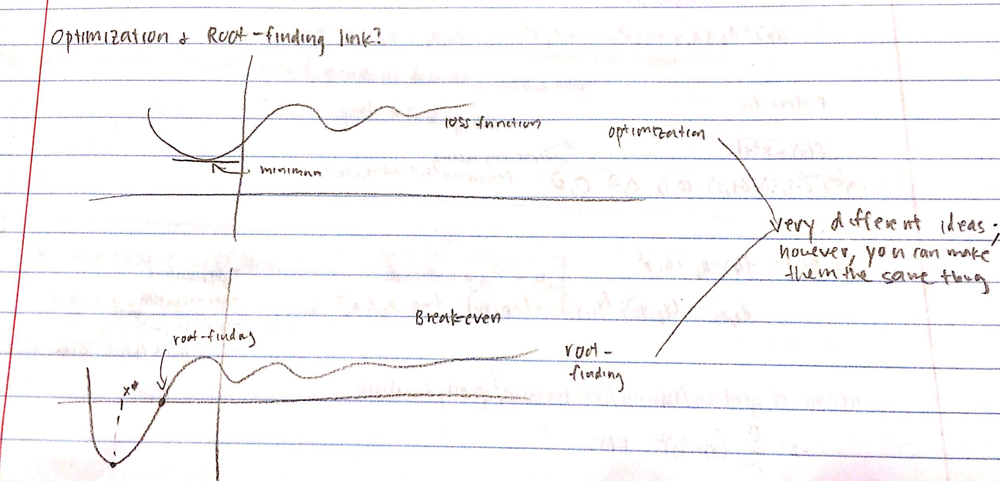
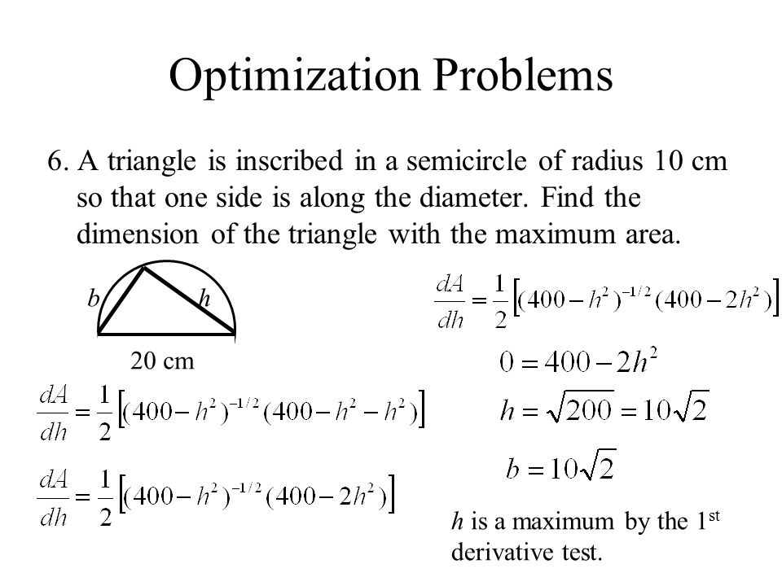
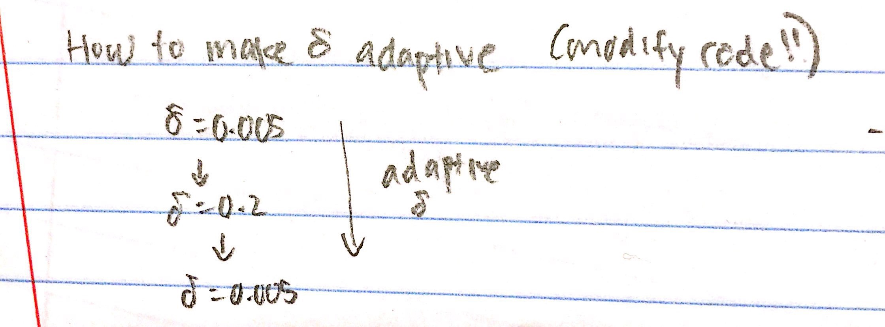
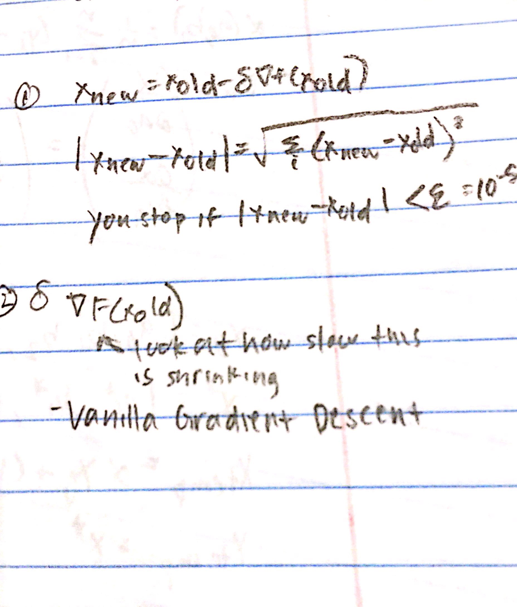

Lecture 3
Optimization
The first topic we will go over today is optimization. Beware: optimization and root-finding may seem similar, but they are very different ideas.
Optimization is often finding the minimum or maximum value of a function. Pictured below is a textbook problem for dictating a function/polynomial for the word-problem, and then solving for the maximum value of the function using derivatives. As you can probably tell, derivatives are a very powerful tool for solving optimization problems.
In addition to maximum and minimum points, there are also saddle points to look out for. Review calculus for this.
Machine-learning
A big part of machine-learning is figuring out how to make delta (the error threshold value) better and better as each new datapoint enters in. In other words, how to make delta adaptive.
As you can see, delta doesn't necessarily become "smaller" persay; it just becomes "better" as in the function curve fits all the datapoints in a more accurate manner.
Illustrated below (#1) is an equation that describes this concept. We stop when the error is less than 10-5.
Under #2, we can look at the code for vanilla gradient descent and see how slow the gradient is shrinking.
We will go over more of the different types of gradient descent in Lecture 4.